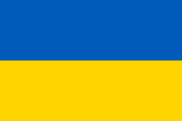
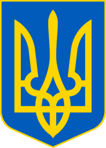

Український прапор складається з двох рівних горизонтальних смуг синього та жовтого кольорів, що символізують блакитне небо та жовті пшеничні поля.

Називається він Тризуб (або Тризуб), у тому ж кольорі, що й на українському прапорі – синій щит із золотим тризубом на ньому. Оскільки він датується дуже давніми часами, є кілька пояснень його значення.

Для кожного громадянина України дуже важливі такі слова: «Ще не вмерла Україна ні слава ні воля». З цих слів починається гімн України. Тексти пісень написав Павло Чубинський, а музику — Михайло Вербицький.
Єдиною державною мовою України є українська, що належить до індоєвропейської родини, слов’янської групи мов.
За даними незалежного опитування 75,2 % респондентів вірять у Бога і 22 % сказали, що не вірять у Бога. 37,4 % сказали, що регулярно відвідують церкву. Більшість віруючих українців – православні (або східні православні), є також греко-католики, римо-католики, мусульмани, євреї.
Україна є унітарною напівпрезидентською конституційною республікою. Україна має свій парламент (Верховну Раду), Уряд (Кабінет Міністрів), Президента. Адміністративний поділ: Україна складається з 24 областей (областей) та Криму. Україна як суверенна і незалежна держава існує з 1991 року.
Розташована в центрі Європи, Україна є найбільшою повністю європейською державою і другою за величиною державою в Європі (після європейської частини Росії, перед Францією). Ландшафт України складається здебільшого з родючих рівнин (або степів) і плоскогір’їв, перетинених такими річками, як Дніпро або Дніпро (2200 км, 1204 км в межах України), Сіверський Донець, Дністер та Південний Буг. Територію України омивають Чорне та Азовське моря. Гори: Карпати (західна сторона) і Кримські (південна сторона).
В Україні переважно помірний клімат із спекотним літом, холодною зимою (снігопади поширені), м’якою весною та осінню.
Українці люблять свята та урочистості, але лише деякі з них є неробочими. Це: 1 січня – Новий рік; 7 січня – Православне Різдво; Великдень; 1-2 травня – День праці; 8-9 травня – День пам’яті та День Перемоги; Трійця; 28 червня – День Конституції; 24 серпня – День Незалежності; 14 жовтня – День захисника України.